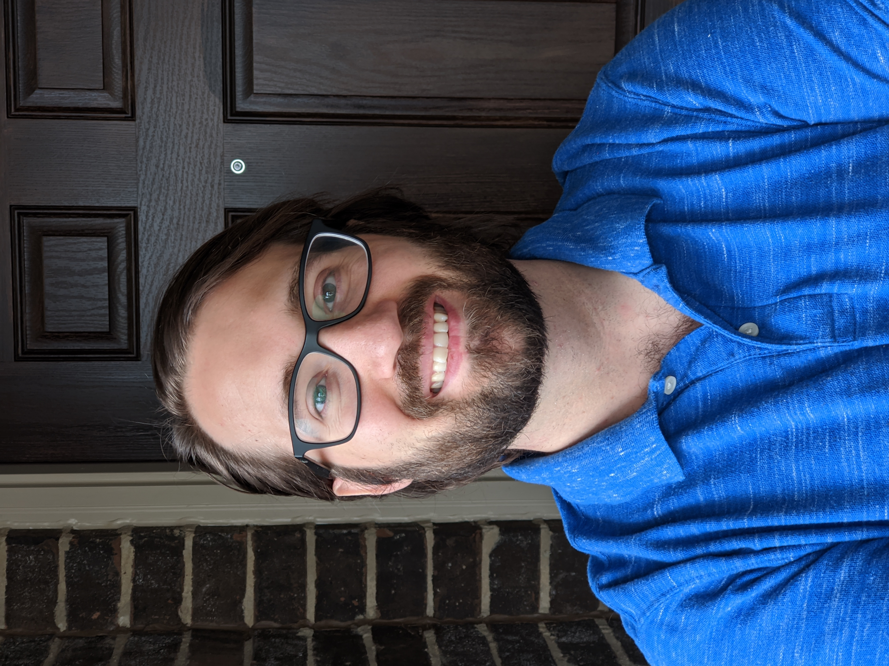

Stephen Dodd, M.Ed.


Science and Technology thrill me.
I do actually like Mathematics.
And I'm not ashamed to admit it.
My goal is to help each and every one of you enjoy it too.
In my youth, I found mathematics very boring. I was great at math.
I enjoyed being great at math. Otherwise, I was unenthusiastic about
it. It took me years to recognize how exciting mathematics can be!
I learned that despite the fact that in isolation, the regurgitation
of low-level mathematics IS excruciatingly boring, mathematics is
not boring, but in fact, it is thrilling!
This boring subject kids are taught in school is not what
mathematics is, or should be. The goal of this site is to show
children the magic of mathematics.
Education and Experience.
I graduated from the University of North Texas in 2012 with a
Bachelor of Arts degree in International Studies, with a minor in
Spanish. I am now a fluent spanish-speaker. The focus of my studies
was Business, Economics and Development. I studied everything I
could, from Cultural Anthropology to Psychology to Marketing.
Upon graduating, I decided to pursue a Computer Science Degree.
While pursuing this Computer Science Degree, I enjoyed working
in hospitality management. However, I changed course when I
decided to take up the noble pursuit of teaching. So again, I
went back to school, and began teaching, eventually obtaining a
Masters Degree in Mathematics Curriculum and Instruction from
the University of Texas at Arlington, and I have been teaching
Secondary Mathematics since 2015.
Over those 5 years, I have had the pleasure of teaching many
wonderful students, from diverse backgrounds, in courses ranging
from 7th grade Mathematics to Calculus BC(second-year).
Thrills.
My favorite pastimes include robotics, technology, science-fiction,
(mostly of the realistic variety), space, engineering, and generally
tinkering. I love to read and create programs and watch news and
trade stocks.
Perhaps most of all, I love a good challenge.